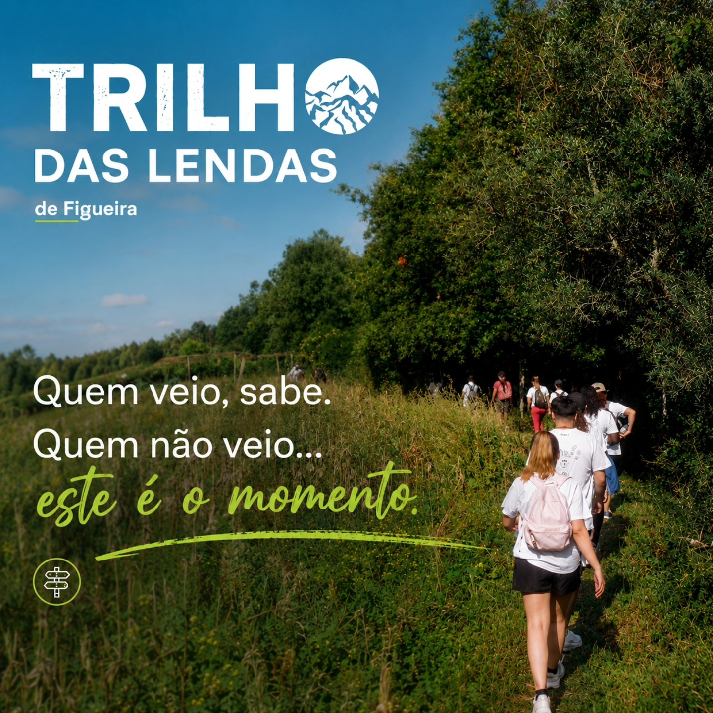
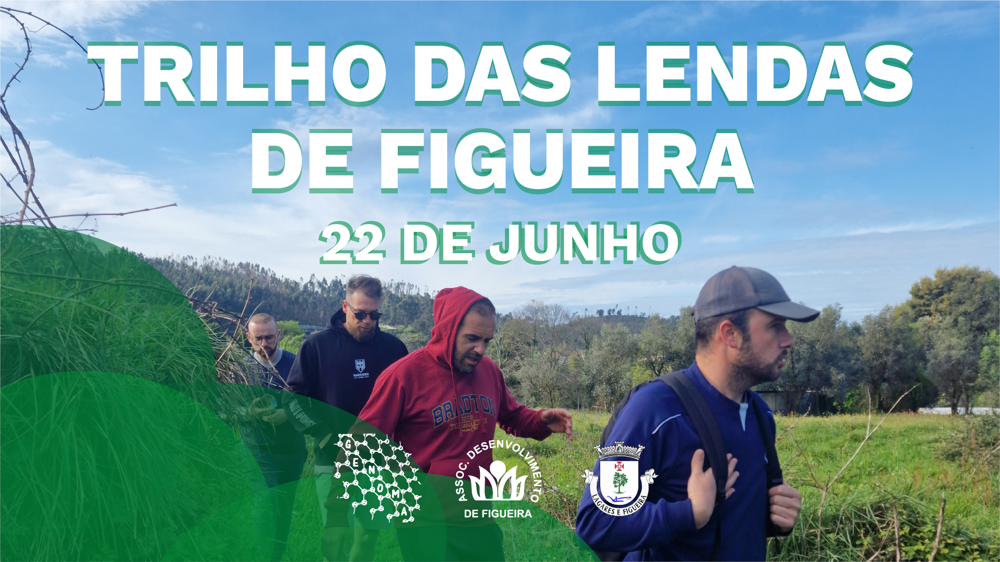

Trilho das Lendas
Evento realizado · 7 de junho de 2026
Sobre o evento
Realizado a 7 de junho de 2026, o Trilho das Lendas percorreu 12,4 km em Figueira, entre moinhos ancestrais e paisagens locais. A iniciativa convidou os participantes a conhecer o património natural e cultural da freguesia.


Agenda da edição de 2026
- 08:00 – 08:45 - Check-in e Levantamento KIT
- 09:00 - Partida do Trilho das Lendas